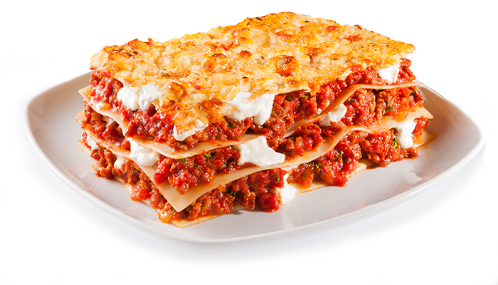

Home
Lasagna

This is lasagna which is a mix of melted cheese, meat, and flat noodles. Can take a long time to cook depending on the preparation.
- Parmesan Cheese
- Romano Cheese
- Provolone Cheese
- Ricotta Cheese
- Mozzarella Cheese
- Ground Beef
- Flat Noodles
- Prego Traditional Italian Sauce
- Eggs
- Stir the ricotta cheese, season the beef, 1/2 cup parmesan cheese and eggs in a medium bowl and set aside. In a 3-quart saucepan over medium-high heat, cook the beef until it's well browned, stirring often to break up the meat. Pour off any fat and stir the sauce in the saucepan.
- Spoon 2 cups beef mixture into a 13x9x2-inch baking dish. Top with 4 lasagna noodles, half the ricotta cheese mixture and half the mozzarella. Repeat the layers. Top with the remaining 4 lasagna noodles, remaining beef mixture and the remaining Parmesan cheese.
- Bake at 400°F. for 30 minutes or until the lasagna is hot. Let stand for 10 minutes before cutting.